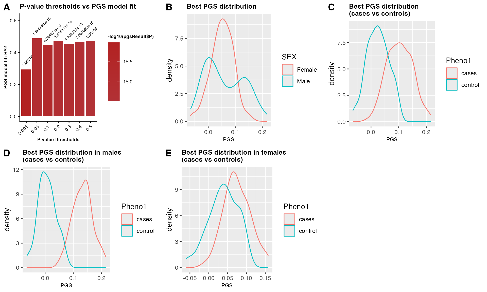
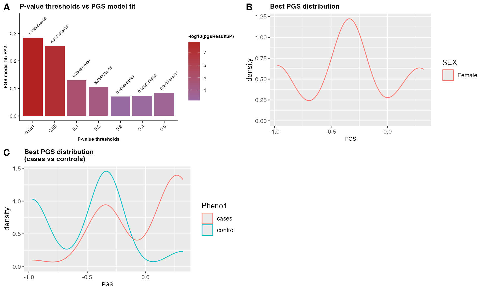
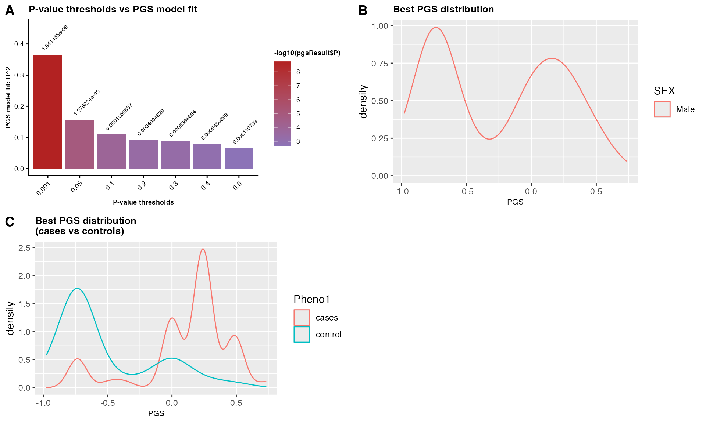

Computing Polygenic Score using GXwasR
Banabithi Bose
University of Colorado Anschutz Medical;Northwestern Universitybanabithi.bose@gmail.com
16 October 2025
Source:vignettes/GXwasR_PGS.Rmd
GXwasR_PGS.RmdThis document provides a tutorial for computing state-of-the-art polygenic scores and sex-aware polygenic scores utilizing the GXwasR R package.
## Call some libraries (Users can ignore this.)
library(printr)
#> Registered S3 method overwritten by 'printr':
#> method from
#> knit_print.data.frame rmarkdown
library(rmarkdown)
#>
#> Attaching package: 'rmarkdown'
#> The following objects are masked from 'package:BiocStyle':
#>
#> html_document, md_document, pdf_documentLoad the GXwasR and Example Datasets:
## Load GXwasR
library(GXwasR)
#>
#> GXwasR: Genome-wide and x-chromosome wide association analyses applying
#> best practices of quality control over genetic data
#> Version 0.99.0 () installed
#> Author: c(
#> person(given = "Banabithi",
#> family = "Bose",
#> role = c("cre", "aut"),
#> email = "banabithi.bose@gmail.com",
#> comment = c(ORCID = "0000-0003-0842-8768"))
#> )
#> Maintainer: Banabithi Bose <banabithi.bose@gmail.com>
#> Tutorial: https://github.com
#> Use citation("GXwasR") to know how to cite this work.
## Load Example Data
data(Summary_Stat_Ex1)
data(Example_phenofile)
data(Example_covarfile)
data(Example_pthresoldfile)
data(highLD_hg19)Compute Standard PGSs using ComputePGS():
About ComputePGS()
help(ComputePGS, package = GXwasR)| ComputePGS | R Documentation |
ComputePGS: Computing polygenic score (PGS)
Description
This function calculates the polygenic score, which is the total of allele counts (genotypes) weighted by estimated effect sizes from genome-wide association studies. It uses C+T filtering techniques. The users could perform clumping procedure choromosome-wise and genome-wide. Also, the function offers the choice of including several genetic principal components along with other covariates. Using this function, users have the freedom to experiment with various clumping and thresholding arrangements to test a wide range of various parameter values.
Usage
ComputePGS(
DataDir,
ResultDir = tempdir(),
finput,
summarystat,
phenofile,
covarfile = NULL,
effectsize = c("BETA", "OR"),
ldclump = FALSE,
LDreference,
clump_p1,
clump_p2,
clump_r2,
clump_kb,
byCHR = TRUE,
pthreshold = c(0.001, 0.05, 0.1, 0.2, 0.3, 0.4, 0.5),
highLD_regions,
ld_prunning = FALSE,
window_size = 50,
step_size = 5,
r2_threshold = 0.02,
nPC = 6,
pheno_type = "binary"
)Arguments
DataDir |
A character string for the file path of the all the input files. |
ResultDir |
A character string for the file path where all output files will be stored. The default is tempdir(). |
finput |
Character string, specifying the prefix of the input PLINK binary files for the genotype data i.e., the target data based on which clumping procedure will be performed. This file needs to be in DataDir. If your target data are small (e.g. N < 500) then you can use the 1000 Genomes Project samples. Make sure to use the population that most closely reflects represents the base sample. |
summarystat |
A dataframe object with GWAS summary statistics. The mandatory column headers in this dataframe are:
Special Notes: The first three columns needed to be |
phenofile |
A character string, specifying the name of the mandatory phenotype file. This is a plain text file with no header line; columns
family ID, individual ID and phenotype columns. For binary trait, the phenotypic value should be coded as 0 or 1, then it will be
recognized as a case-control study (0 for controls and 1 for cases). Missing value should be represented by "-9" or "NA". The
interested phenotype column should be labeled as "Pheno1". This file needs to be in |
covarfile |
A character string, specifying the name of the covariate file which is a plain .text file with no header line; columns are family ID,
individual ID and the covariates. The default is |
effectsize |
Boolean value, |
ldclump |
Boolean value, |
LDreference |
A character string, specifying the prefix of the PLINK files of the population reference panel of the same ancestry, and ideally
the one that was used for imputing your target dataset. These files should be in |
clump_p1 |
Numeric value, specifying the significance threshold for index SNPs if |
clump_p2 |
Numeric value, specifying the secondary significance threshold for clumped SNPs if |
clump_r2 |
Numeric value, specifying the linkage disequilibrium (LD) threshold for clumping if |
clump_kb |
Integer value, specifying the physical distance threshold in base-pair for clumping if |
byCHR |
Boolean value, 'TRUE' or 'FALSE', specifying chromosome-wise clumping procedure if |
pthreshold |
Numeric vector, containing several p value thresholds to maximize predictive ability of the derived polygenic scores. |
highLD_regions |
Character string, specifying the .txt file name with known genomic regions with high LD. The default is |
ld_prunning |
Boolean value, |
window_size |
Integer value, specifying a window size in variant count or kilobase for LD-based filtering in computing genetic PC. The default is 50. |
step_size |
Integer value, specifying a variant count to shift the window at the end of each step for LD filtering in computing genetic PCs. The default is 5. |
r2_threshold |
Numeric value between 0 to 1 of pairwise |
nPC |
Positive integer value, specifying the number of genetic PCs to be included as predictor in the PGS model fit. The default is 6. |
pheno_type |
Boolean value, ‘binary’ or ‘quantitative’, specifying the type of the trait. The default is ‘binary’. |
Value
A list object containing a dataframe a numeric value, a GeneticPC plot (if requested), and a PGS plot. The dataframe,PGS, contains four mandatory columns, such as, IID (i.e., Individual ID), FID (i.e., Family ID), Pheno1 (i.e., the trait for PGS) and Score (i.e., the best PGS). Other columns of covariates could be there. The numeric value, BestP contains the threshold of of the best p-value for the best PGS model fit.
Also, the function produces several plots such as p-value thresholds vs PGS model fit and PGS distribution among male and females. For case-control data, it shows PGS distribution among cases and controls and ROC curves as well.
Author(s)
Banabithi Bose
Examples
data("Summary_Stat_Ex1", package = "GXwasR")
data("Example_phenofile", package = "GXwasR")
data("Example_covarfile", package = "GXwasR")
data("Example_pthresoldfile", package = "GXwasR")
data("highLD_hg19", package = "GXwasR")
DataDir <- GXwasR:::GXwasR_data()
ResultDir <- tempdir()
finput <- "GXwasR_example"
summarystat <- Summary_Stat_Ex1[, c(2, 4, 7, 1, 3, 12)]
phenofile <- Example_phenofile # Cannot be NULL
# The interested phenotype column should be labeled as "Pheno1".
covarfile <- Example_covarfile
clump_p1 <- 0.0001
clump_p2 <- 0.0001
clump_kb <- 500
clump_r2 <- 0.5
byCHR <- TRUE
pthreshold <- Example_pthresoldfile$Threshold
ld_prunning <- TRUE
highLD_regions <- highLD_hg19
window_size <- 50
step_size <- 5
r2_threshold <- 0.02
nPC <- 6 # We can incorporate PCs into our PGS analysis to account for population stratification.
pheno_type <- "binary"
PGSresult <- ComputePGS(DataDir, ResultDir, finput, summarystat, phenofile, covarfile,
effectsize = "BETA", LDreference = "GXwasR_example", ldclump = FALSE, clump_p1, clump_p2,
clump_r2, clump_kb, byCHR = TRUE, pthreshold = pthreshold, highLD_regions = highLD_regions,
ld_prunning = TRUE, window_size = 50, step_size = 5, r2_threshold = 0.02, nPC = 6,
pheno_type = "binary"
)
## This table shows 10 samples with phenotype, covariates and a PGS column.
PGS <- PGSresult$PGS
PGS[seq_len(10), ]
## The best threshold
BestPvalue <- PGSresult$BestP$Threshold
BestPvalueRunning ComputePGS()
DataDir <- GXwasR:::GXwasR_data()
ResultDir <- tempdir()
finput <- "GXwasR_example"
summarystat <- Summary_Stat_Ex1[, c(2, 4, 7, 1, 3, 12)]
phenofile <- Example_phenofile # Cannot be NULL, the interested phenotype column should be labeled as "Pheno1".
covarfile <- Example_covarfile
clump_p1 <- 0.0001
clump_p2 <- 0.0001
clump_kb <- 500
clump_r2 <- 0.5
byCHR <- TRUE
pthreshold <- Example_pthresoldfile$Threshold
ld_prunning <- TRUE
highLD_regions <- highLD_hg19
window_size <- 50
step_size <- 5
r2_threshold <- 0.02
nPC <- 6 # We can incorporate PCs into our PGS analysis to account for population stratification.
pheno_type <- "binary"
ldclump <- FALSE
pheno_type <- "binary"
PGSresult <- ComputePGS(DataDir, ResultDir, finput, summarystat, phenofile, covarfile, effectsize = "BETA", LDreference = "GXwasR_example", ldclump = FALSE, clump_p1, clump_p2, clump_r2, clump_kb, byCHR = TRUE, pthreshold = pthreshold, highLD_regions = highLD_regions, ld_prunning = TRUE, window_size = 50, step_size = 5, r2_threshold = 0.02, nPC = 6, pheno_type = "binary")
#> Using PLINK v1.9.0-b.7.7 64-bit (22 Oct 2024)
#> ℹ 0.001
#> • Computing PGS for threshold 0.001
#> ℹ 0.05
#> • Computing PGS for threshold 0.05
#> ℹ 0.1
#> • Computing PGS for threshold 0.1
#> ℹ 0.2
#> • Computing PGS for threshold 0.2
#> ℹ 0.3
#> • Computing PGS for threshold 0.3
#> ℹ 0.4
#> • Computing PGS for threshold 0.4
#> ℹ 0.5
#> • Computing PGS for threshold 0.5
#> This message is displayed once every 8 hours.
PGSresult$PGS_plot
## Table 1: A table showing 10 samples with phenotype, covariates, and sex-combined PGS scores.
PGS <- PGSresult$PGS
PGS[1:10, ]| FID | IID | Pheno1 | AGE | testcovar | PC1 | PC2 | PC3 | PC4 | PC5 | PC6 | SCORE |
|---|---|---|---|---|---|---|---|---|---|---|---|
| EUR_FIN | HG00171 | 1 | 36 | 1 | 0.0964618 | -0.0382514 | 0.0090380 | -0.0895293 | -0.0252291 | 0.0146543 | 0.0484212 |
| EUR_FIN | HG00173 | 1 | 81 | 1 | 0.0743932 | -0.0567271 | 0.0396994 | 0.0205343 | 0.0230410 | -0.0360380 | 0.0293742 |
| EUR_FIN | HG00174 | 1 | 83 | 1 | 0.0645349 | -0.0561035 | -0.0145786 | -0.0264343 | -0.0018095 | 0.0144521 | 0.0099674 |
| EUR_FIN | HG00176 | 2 | 75 | 0 | 0.0832472 | -0.0560208 | 0.0302654 | -0.0011077 | -0.0530371 | -0.0335803 | 0.1042060 |
| EUR_FIN | HG00177 | 1 | 88 | 1 | 0.0775687 | -0.0094644 | 0.0451785 | -0.0373215 | -0.0617431 | -0.0719951 | 0.0314303 |
| EUR_FIN | HG00178 | 1 | 24 | 1 | 0.0661714 | -0.0504906 | 0.0248539 | -0.0828066 | 0.0409418 | 0.0055953 | 0.0722689 |
| EUR_FIN | HG00179 | 2 | 78 | 1 | 0.0806110 | -0.0115409 | -0.0075072 | -0.0328823 | 0.0355973 | 0.0424512 | 0.1165240 |
| EUR_FIN | HG00180 | 1 | 39 | 1 | 0.0840638 | 0.0011783 | 0.0128646 | 0.0591540 | 0.0547667 | -0.0101595 | 0.0617159 |
| EUR_FIN | HG00182 | 1 | 50 | 1 | 0.1029760 | -0.0430046 | 0.0199971 | -0.0302365 | -0.0901911 | -0.0378515 | 0.0283703 |
| EUR_FIN | HG00183 | 1 | 58 | 0 | 0.0827103 | -0.0386530 | 0.0509366 | -0.0015378 | -0.1045610 | 0.0623634 | 0.0386297 |
## The best threshold
BestPvalue <- PGSresult$BestP$Threshold
BestPvalue
#> [1] 0.05Computing Sex-Aware PGS
Datasets for computing PGS
Discovery Data i.e., GWAS summary statistics with mandatory columns such as “SNP”(SNP names), “A1”(effect allele), “BETA”(effect size in beta value) and “P”(p-value).
# Example discovery data is included in GXwasR
data(Summary_Stat_Ex1)
summarystat <- Summary_Stat_Ex1[, c(2, 4, 7, 1, 3, 12)]Target Data i.e., genotype dataset in plink .bed, .bim and .fam format.
# Example target data is included in GXwasR
DataDir <- GXwasR:::GXwasR_data()
finput <- "GXwasR_example"Quality control of the datasets before computing sex-aware PGS.
Users must first ensure that both datasets are mapped to the same genome build. The quality control procedure is:
(A) Discovery Data: Remove multi-allelic, indels and ambiguous (A/T or C/G) SNPs. Then remove SNPs with minor allele frequency (MAF) < 0.05 and quality info score < 0.1. For this filtering, R packages like data.table, dplyr, tidyverse can be used.
(B) Target Data: Remove multi-allelic, indels and ambiguous
(A/T or C/G) SNPs. Then remove SNPs with MAF < 0.05 and Hardy
Weinberg Equilibrium (hwe) > e-10. For this filtering steps, users
should use FilterAllele() and QCsnp()
functions in R.
Let’s see how to use these functions. For the details of these utility functions, please follow https://boseb.github.io/GXwasR/articles/GXwasR_overview.html.
We will use FilterAllele() on target data to filter out
the multi-allelic SNPs. Also, note that GXwasR does not work with
multi-allelic variants. So, this filtering step is critical.
# Target data
DataDir <- GXwasR:::GXwasR_data()
ResultDir <- tempdir()
finput <- "GXwasR_example"
foutput <- "filtered_multiallelic"
x <- FilterAllele(DataDir, ResultDir, finput, foutput)
#> ℹ There is no multi-allelic SNP present in the input dataset.We will next use QCsnp() to remove ambiguous (A/T or
C/G) SNPs and SNPs with MAF < 0.05 and Hardy Weinberg Equilibrium
(hwe) > e-10.
## Since there was no multiallelic SNPs, we will continue with original input data.
finput <- "GXwasR_example"
foutput <- "filtered_step1"
geno <- NULL
maf <- 0.05
casecontrol <- FALSE
caldiffmiss <- FALSE
diffmissFilter <- FALSE
dmissX <- FALSE
dmissAutoY <- FALSE
monomorphicSNPs <- TRUE
ld_prunning <- FALSE
casecontrol <- FALSE ## Since the filtering doesn't require us to run on cases and controls separately, we will make this parameter FALSE.
hweCase <- NULL
hweControl <- NULL
hwe <- 1e-10
monomorphicSNPs <- FALSE
ld_prunning <- FALSE
x <- QCsnp(DataDir = DataDir, ResultDir = ResultDir, finput = finput, foutput = foutput, geno = geno, maf = maf, hweCase = hweCase, hweControl = hweControl, hwe = hwe, ld_prunning = ld_prunning, casecontrol = casecontrol, monomorphicSNPs = monomorphicSNPs, caldiffmiss = caldiffmiss, dmissX = dmissX, dmissAutoY = dmissAutoY, diffmissFilter = diffmissFilter)
#> ℹ 4214 Ambiguous SNPs (A-T/G-C), indels etc. were removed.
#> ✔ Thresholds for maf, geno and hwe worked.
#> --hwe: 3 variants removed due to Hardy-Weinberg exact test.
#> 5467 variants removed due to minor allele threshold(s)
#> ℹ No filter based on differential missingness will be applied.
#> ✔ Output PLINK files prefixed as ,filtered_step1, with passed SNPs are saved in ResultDir.
#> ℹ Input file has 26527 SNPs.
#> ℹ Output file has 16843 SNPs after filtering.(C) Check whether SNPs present in the GWAS discovery dataset are in target dataset.
Gather SNPs common to discovery and target datasets.
SNP1 <- unique(summarystat$SNP)
targetbim <- read.table(paste0(ResultDir, "/filtered_step1.bim"))
SNP2 <- unique(targetbim$V2)
commonSNP <- intersect(SNP1, SNP2) ## 991 SNPs are common between our discovery data and target dataFiltering discovery data and target data to retain SNPs common to both datasets
commonSNP <- data.table::as.data.table(commonSNP)
colnames(commonSNP) <- "SNP"
NewDiscoveryData <- merge(commonSNP, summarystat, by = "SNP")
## For making target data with common SNPs, we will use FilterSNP().
SNPvec <- commonSNP
# Need to copy filtered_step1 file from ResultDir to DataDir
ftemp <- list.files(paste0(ResultDir, "/"), pattern = "filtered_step1")
invisible(file.copy(paste0(ResultDir, "/", ftemp), DataDir))
finput <- "filtered_step1"
foutput <- "NewtargetData"
FilterSNP(DataDir, ResultDir, finput, foutput, SNPvec, extract = TRUE)
#> ℹ 991 SNPs are extracted
#> ✔ Plink files with extracted SNPs are in /var/folders/d6/gtwl3_017sj4pp14fbfcbqjh0000gp/T//RtmppSoli8 prefixed as NewtargetData
#> NULLNow, discovery and target datasets are ready for computing sex-combined and sex-stratified PGS.
Sex-combined PGS computation
(A) Perform LD-clumping of the discovery data using the target data as the reference.
(B) Compute PGS at a variety of p-value thresholds.
(C) Select best threshold based on R-square (for quantitative trait) or MacFadden R-square (for binary trait) using generalized linear model with covariates, such as genetic PCs.
Use ComputePGS() to perform the steps (A), (B) and
(C).
# Running
# Filtered target data needs to be copied from ResultDir to DataDir.
ftemp <- list.files(paste0(ResultDir, "/"), pattern = "NewtargetData")
invisible(file.copy(paste0(ResultDir, "/", ftemp), DataDir))
finput <- "NewtargetData"
# Filtered discovery data.
# Need to maintain the first three coulmn of this dataset as SNP ID, Effect Allele and Effect Size
summarystat <- NewDiscoveryData
phenofile <- Example_phenofile # Cannot be NULL, the interested phenotype column should be labeled as "Pheno1".
## Added "AGE" and "testcovar" as covariates.
covarfile <- Example_covarfile
clump_p1 <- 0.0001
clump_p2 <- 0.0001
clump_kb <- 500
clump_r2 <- 0.5
byCHR <- TRUE
pthreshold <- Example_pthresoldfile$Threshold
ld_prunning <- TRUE
highLD_regions <- highLD_hg19
window_size <- 50
step_size <- 5
r2_threshold <- 0.02
nPC <- 6 # We can incorporate PCs into our PGS analysis to account for population stratification.
pheno_type <- "binary"
effectsize <- "BETA"
ldclump <- FALSE
PGSresult <- ComputePGS(DataDir, ResultDir, finput, summarystat, phenofile, covarfile, effectsize = "BETA", LDreference = "GXwasR_example", ldclump = FALSE, clump_p1, clump_p2, clump_r2, clump_kb, byCHR = TRUE, pthreshold = pthreshold, highLD_regions = highLD_regions, ld_prunning = TRUE, window_size = 50, step_size = 5, r2_threshold = 0.02, nPC = 6, pheno_type = "binary")
#> ℹ 0.001
#> • Computing PGS for threshold 0.001
#> ℹ 0.05
#> • Computing PGS for threshold 0.05
#> ℹ 0.1
#> • Computing PGS for threshold 0.1
#> ℹ 0.2
#> • Computing PGS for threshold 0.2
#> ℹ 0.3
#> • Computing PGS for threshold 0.3
#> ℹ 0.4
#> • Computing PGS for threshold 0.4
#> ℹ 0.5
#> • Computing PGS for threshold 0.5
PGSresult$PGS_plotFigure 2: PGS analysis. (A) Sex-combined PGS analysis showing model fit across p-value thresholds, PGS distributions by: (B) sex, (C) case-control status, and PGS stratified by: case-control status within: (D) males, and (E) females.
Note: In real population, plot B) should show similar distribution of PGS scores in males and females. Slight difference in male vs female cases maybe possible.
## Table 2: A table showing 10 samples with phenotype, covariates, and sex-combined PGS scores.
PGS <- PGSresult$PGS
PGS[1:10, ]| FID | IID | Pheno1 | AGE | testcovar | PC1 | PC2 | PC3 | PC4 | PC5 | PC6 | SCORE |
|---|---|---|---|---|---|---|---|---|---|---|---|
| EUR_FIN | HG00171 | 1 | 36 | 1 | 0.0816192 | 0.0088405 | 0.0457488 | -0.0458072 | 0.0361127 | -0.0444544 | 0.0446702 |
| EUR_FIN | HG00173 | 1 | 81 | 1 | 0.0783950 | 0.0793499 | -0.0203422 | 0.0507417 | 0.0060022 | 0.0682457 | 0.0227245 |
| EUR_FIN | HG00174 | 1 | 83 | 1 | 0.0417082 | -0.0182760 | -0.0141222 | -0.0796694 | -0.1079240 | 0.0417553 | -0.0021202 |
| EUR_FIN | HG00176 | 2 | 75 | 0 | 0.0330363 | -0.0687181 | 0.0420013 | 0.0035531 | -0.0326060 | 0.0546183 | 0.1291310 |
| EUR_FIN | HG00177 | 1 | 88 | 1 | 0.1078350 | 0.0402309 | -0.0575659 | 0.0204330 | -0.0190359 | -0.1153630 | 0.0456979 |
| EUR_FIN | HG00178 | 1 | 24 | 1 | 0.0446610 | -0.0178283 | -0.0541228 | -0.1293990 | 0.0191170 | 0.0419359 | 0.0974915 |
| EUR_FIN | HG00179 | 2 | 78 | 1 | -0.0079884 | 0.0495156 | -0.0417300 | -0.0908318 | -0.1013690 | -0.0286235 | 0.1043860 |
| EUR_FIN | HG00180 | 1 | 39 | 1 | -0.0643263 | -0.0789866 | -0.0961588 | -0.0117982 | 0.0919479 | -0.0083767 | 0.0943266 |
| EUR_FIN | HG00182 | 1 | 50 | 1 | 0.0477393 | 0.0258317 | 0.1084700 | -0.0102109 | -0.0949523 | 0.0224777 | 0.0248974 |
| EUR_FIN | HG00183 | 1 | 58 | 0 | 0.0181373 | -0.0707456 | 0.0252158 | -0.0319165 | -0.0351717 | -0.0521393 | 0.0521662 |
## The best threshold
BestPvalue <- PGSresult$BestP$Threshold
BestPvalue
#> [1] 0.05(D) Check whether there is a different liability threshold between sexes.
To evaluate whether there is a sex-specific liability threshold, users can test whether the genetic burden (measured by PGS) differs between male and female cases. Under the liability threshold model, a sex difference would suggest that one sex requires a higher genetic burden to manifest the trait (i.e., a higher threshold), while the other requires fewer or smaller genetic burden factors.
Users can perform regression analyses across different PGS thresholds within cases only to assess the consistency of the sex effect. In this model, sex is the main predictor, with genetic principal components (PCs) and other relevant covariates included for adjustment:
PGS ~ Sex + PCs + Other Covariates.
This test can be implemented using SexRegress(), which evaluates whether male and female cases differ significantly in their polygenic burden.
About SexRegress()
help(SexRegress, package = GXwasR)| SexRegress | R Documentation |
SexRegress: Performing linear regression analysis with quantitative response variable.
Description
This function could be used to check association of two variables. For instance, PGS with sex.
Usage
SexRegress(fdata, regressor_index, response_index)Arguments
fdata |
R dataframe object. The column with header |
regressor_index |
Integer value, specifying the column number of the main regressor variable. |
response_index |
Integer value, specifying the column number of the response variable. |
Value
Numeric value containing the regression estimate ("Estimate"), standard error ("Std. Error"), statistics ("t value") and
p-value (Pr(>|t|))
Examples
data("Regression_Ex", package = "GXwasR")
fdata <- Regression_Ex
fdata$SEX <- as.factor(as.character(fdata$SEX))
response_index <- 1
regressor_index <- 2
x <- SexRegress(fdata, regressor_index, response_index)Run SexRegress in cases()
In this case, the argument “famfile” should be used for the case-only file from the target data.
# Running
# First, we need to make fdata object.
library(GXwasR)
famfile <- read.table(paste0(ResultDir, "/NewtargetData.fam"))[, c(1, 2, 5)]
colnames(famfile) <- c("FID", "IID", "Sex")
prefdata <- merge(famfile, PGS, by = c("IID", "FID"))
fdata <- prefdata[, c(13, 3:12)]
fdata$Sex <- as.factor(as.character(fdata$Sex))
response_index <- 1
regressor_index <- 2
x <- SexRegress(fdata, regressor_index, response_index)
x
#> Estimate Std. Error t value Pr(>|t|)
#> -0.005453123 0.005495108 -0.992359622 0.321927372In this example, the association between PGS and sex is not significant. Users can test across different p-value thresholds of PGS as mentioned in step (E).
Sex-stratified PGS computation
The steps are:
(A) Generate separate male and female discovery data by stratified GWAS.
We will use SumstatMale and SumstatFemale for these.
(B) Prepare separate male and female target datasets.
For this, we will utilize GetMFPlink().
library(GXwasR)
## We will use NewtargetData as input for this function.
finput <- "NewtargetData"
foutput <- "maletarget"
sex <- "males"
x <- GetMFPlink(DataDir = DataDir, ResultDir = ResultDir, finput = finput, foutput = foutput, sex = sex, xplink = FALSE, autoplink = FALSE)
#> ✔ Output PLINK files, prefixed as maletarget, are in
#> /var/folders/d6/gtwl3_017sj4pp14fbfcbqjh0000gp/T//RtmppSoli8
foutput <- "femaletarget"
sex <- "females"
x <- GetMFPlink(DataDir = DataDir, ResultDir = ResultDir, finput = finput, foutput = foutput, sex = sex, xplink = FALSE, autoplink = FALSE)
#> ✔ Output PLINK files, prefixed as femaletarget, are in
#> /var/folders/d6/gtwl3_017sj4pp14fbfcbqjh0000gp/T//RtmppSoli8(C) Perform LD clumping separately in both discovery data.
(D) Compute PGS at a variety of p-value thresholds, using male-only discovery data to compute scores for female-only target data and vice versa.
(E) Select best threshold based on R-square (for quantitative trait) or MacFadden R-square (for binary trait) using generalized linear model with covariates, such as genetic PCs.
We will utilize the ComputePGS() to perform the steps
(C), (D) and (E).
# Running
# Male and female target datasets need to be copied from ResultDir to DataDir.
ftemp <- list.files(paste0(ResultDir, "/"), pattern = "target")
invisible(file.copy(paste0(ResultDir, "/", ftemp), DataDir))Computing PGS in female-only target data using male-only discovery data
Evaluate the transferability of genetic risk prediction across sexes and to test whether associations identified in one sex generalize to the other.
# DataDir <- GXwasR:::GXwasR_data()
ResultDir <- tempdir()
finput <- "femaletarget"
# Filtered discovery data.
# Need to maintain the first three coulmn of this dataset as SNP ID, Effect Allele and Effect Size
summarystat <- Summary_Stat_Ex1[, c(2, 4, 7, 1, 3, 12)]
## Making phenofile only with females
famfile <- read.table(paste0(ResultDir, "/femaletarget.fam"))[, c(1, 2, 5)]
colnames(famfile) <- c("FID", "IID", "Sex")
famfileF <- famfile[famfile$Sex == 2, ]
phenofile <- merge(famfileF, Example_phenofile, by = c("FID", "IID")) # Cannot be NULL, the interested phenotype column should be labeled as "Pheno1".
## Added "AGE" and "testcovar" as covariates.
## Making cpvarfile with females
covarfile <- merge(famfileF, Example_covarfile, by = c("FID", "IID"))
clump_p1 <- 0.0001
clump_p2 <- 0.0001
clump_kb <- 500
clump_r2 <- 0.5
byCHR <- TRUE
pthreshold <- Example_pthresoldfile$Threshold
ld_prunning <- TRUE
highLD_regions <- highLD_hg19
window_size <- 50
step_size <- 5
r2_threshold <- 0.02
nPC <- 6 # We can incorporate PCs into our PGS analysis to account for population stratification.
pheno_type <- "binary"
ldclump <- FALSE
effectsize <- "BETA"
PGSresultFemale <- ComputePGS(DataDir, ResultDir, finput, summarystat, phenofile, covarfile, effectsize = "BETA", LDreference = "GXwasR_example", ldclump = FALSE, clump_p1, clump_p2, clump_r2, clump_kb, byCHR = TRUE, pthreshold = pthreshold, highLD_regions = highLD_regions, ld_prunning = TRUE, window_size = 50, step_size = 5, r2_threshold = 0.02, nPC = 6, pheno_type = "binary")
#> ℹ 0.001
#> • Computing PGS for threshold 0.001
#> ℹ 0.05
#> • Computing PGS for threshold 0.05
#> ℹ 0.1
#> • Computing PGS for threshold 0.1
#> ℹ 0.2
#> • Computing PGS for threshold 0.2
#> ℹ 0.3
#> • Computing PGS for threshold 0.3
#> ℹ 0.4
#> • Computing PGS for threshold 0.4
#> ℹ 0.5
#> • Computing PGS for threshold 0.5
PGSresultFemale$PGS_plot
Figure 3: Female-specific PGS analysis showing: (A) model fit across p-value thresholds, PGS distributions in: (B) females, and (C) stratified by case-control status within females.
## Table 3: A table showing eight male samples with phenotype, covariates, and with female-specific PGS scores.
PGSfemale <- PGSresultFemale$PGS
PGSfemale[1:10, ]| FID | IID | Pheno1 | Sex | AGE | testcovar | PC1 | PC2 | PC3 | PC4 | PC5 | PC6 | SCORE |
|---|---|---|---|---|---|---|---|---|---|---|---|---|
| EUR_FIN | HG00171 | 1 | 2 | 36 | 1 | 0.0358056 | -0.0103993 | 0.0304770 | 0.0804331 | -0.0316828 | 0.2308030 | -0.975333 |
| EUR_FIN | HG00173 | 1 | 2 | 81 | 1 | -0.0259195 | 0.0522046 | 0.0338950 | -0.0783466 | -0.0301168 | 0.0481648 | -0.327300 |
| EUR_FIN | HG00174 | 1 | 2 | 83 | 1 | 0.0690632 | 0.1000850 | 0.0177107 | -0.0062435 | 0.2347970 | -0.1600570 | -0.975333 |
| EUR_FIN | HG00176 | 2 | 2 | 75 | 0 | 0.0464837 | -0.0611293 | -0.0300357 | -0.1261310 | 0.0221893 | -0.0430133 | 0.320733 |
| EUR_FIN | HG00177 | 1 | 2 | 88 | 1 | 0.0175615 | -0.0407396 | -0.1278730 | 0.1634300 | 0.1062830 | 0.0622563 | -0.975333 |
| EUR_FIN | HG00178 | 1 | 2 | 24 | 1 | 0.1526140 | 0.1886470 | -0.0341148 | -0.0824660 | -0.0736962 | -0.0412650 | 0.320733 |
| EUR_FIN | HG00179 | 2 | 2 | 78 | 1 | 0.0881766 | 0.0494024 | 0.1288620 | 0.0523562 | -0.0191810 | 0.0078241 | -0.327300 |
| EUR_FIN | HG00180 | 1 | 2 | 39 | 1 | 0.0459778 | 0.0170708 | 0.0761808 | -0.0344214 | -0.0240829 | 0.0729217 | -0.327300 |
| EUR_FIN | HG00266 | 2 | 2 | 64 | 1 | 0.0238295 | -0.0127790 | -0.1954810 | -0.0758269 | -0.0017235 | 0.0638968 | 0.320733 |
| EUR_FIN | HG00268 | 1 | 2 | 66 | 1 | -0.1570560 | -0.0401398 | 0.1022290 | 0.0203453 | -0.0103913 | 0.0914439 | -0.327300 |
## The best threshold
BestPvalue <- PGSresultFemale$BestP$Threshold
BestPvalue
#> [1] 0.001Compute PGS for male-only target data using female-only discovery data
library(GXwasR)
data(Summary_Stat_Ex2)
# DataDir <- system.file("extdata", package = "GXwasR")
ResultDir <- tempdir()
finput <- "maletarget"
# Filtered discovery data.
# Need to maintain the first three coulmn of this dataset as SNP ID, Effect Allele and Effect Size
summarystat <- Summary_Stat_Ex2[, c(2, 4, 7, 1, 3, 12)]
## Making phenofile only with females
famfile <- read.table(paste0(ResultDir, "/maletarget.fam"))[, c(1, 2, 5)]
colnames(famfile) <- c("FID", "IID", "Sex")
famfileM <- famfile[famfile$Sex == 1, ]
phenofile <- merge(famfileM, Example_phenofile, by = c("FID", "IID")) # Cannot be NULL, the interested phenotype column should be labeled as "Pheno1".
## Added "AGE" and "testcovar" as covariates.
## Making cpvarfile with females
covarfile <- merge(famfileM, Example_covarfile, by = c("FID", "IID"))
clump_p1 <- 0.0001
clump_p2 <- 0.0001
clump_kb <- 500
clump_r2 <- 0.5
byCHR <- TRUE
pthreshold <- Example_pthresoldfile$Threshold
ld_prunning <- TRUE
highLD_regions <- highLD_hg19
window_size <- 50
step_size <- 5
r2_threshold <- 0.02
nPC <- 6 # We can incorporate PCs into our PGS analysis to account for population stratification.
pheno_type <- "binary"
ldclump <- FALSE
effectsize <- "BETA"
PGSresultmale <- ComputePGS(DataDir, ResultDir, finput, summarystat, phenofile, covarfile, effectsize = "BETA", LDreference = "GXwasR_example", ldclump = FALSE, clump_p1 = clump_p1, clump_p2 = clump_p2, clump_r2 = clump_r2, clump_kb = clump_kb, byCHR = TRUE, pthreshold = pthreshold, highLD_regions = highLD_regions, ld_prunning = TRUE, window_size = 50, step_size = 5, r2_threshold = 0.02, nPC = 6, pheno_type = "binary")
#> ℹ 0.001
#> • Computing PGS for threshold 0.001
#> ℹ 0.05
#> • Computing PGS for threshold 0.05
#> ℹ 0.1
#> • Computing PGS for threshold 0.1
#> ℹ 0.2
#> • Computing PGS for threshold 0.2
#> ℹ 0.3
#> • Computing PGS for threshold 0.3
#> ℹ 0.4
#> • Computing PGS for threshold 0.4
#> ℹ 0.5
#> • Computing PGS for threshold 0.5
PGSresultmale$PGS_plot
Figure 4: Male-specific PGS analysis showing: (A) model fit across p-value thresholds, PGS distributions in: (B) males, and (C) stratified by case-control status within males.
## Table 4: A table showing eight female samples with phenotype, covariates and with male-specific PGS scores.
PGSmale <- PGSresultmale$PGS
PGSmale[1:10, ]| FID | IID | Pheno1 | Sex | AGE | testcovar | PC1 | PC2 | PC3 | PC4 | PC5 | PC6 | SCORE |
|---|---|---|---|---|---|---|---|---|---|---|---|---|
| EUR_FIN | HG00182 | 1 | 1 | 50 | 1 | 0.0647406 | -0.0928744 | -0.0671189 | 0.1612960 | 0.0577821 | -0.0080738 | -0.7348330 |
| EUR_FIN | HG00183 | 1 | 1 | 58 | 0 | -0.1385060 | -0.0695656 | -0.0741905 | -0.0772780 | 0.0448000 | 0.0203577 | -0.0018333 |
| EUR_FIN | HG00185 | 2 | 1 | 22 | 1 | -0.0149102 | -0.1042650 | -0.0490031 | 0.0909954 | -0.1272400 | 0.0736424 | -0.0018333 |
| EUR_FIN | HG00186 | 2 | 1 | 52 | 0 | 0.0936989 | -0.0658094 | -0.1384690 | 0.0711780 | -0.1307370 | -0.2262310 | 0.0000000 |
| EUR_FIN | HG00187 | 2 | 1 | 49 | 1 | -0.0495608 | -0.0536840 | -0.0351695 | 0.0991132 | 0.0429508 | 0.1034500 | 0.4873330 |
| EUR_FIN | HG00188 | 1 | 1 | 47 | 1 | -0.0168334 | -0.0884520 | -0.0100132 | 0.0212827 | 0.0980303 | 0.0024415 | -0.4883330 |
| EUR_FIN | HG00189 | 1 | 1 | 27 | 1 | 0.0926677 | -0.0486674 | -0.0237400 | 0.0180525 | -0.0864605 | -0.0121730 | -0.7348330 |
| EUR_FIN | HG00190 | 2 | 1 | 42 | 0 | 0.1214390 | 0.1955690 | 0.0718894 | 0.0852533 | 0.0009986 | -0.0935724 | -0.7348330 |
| EUR_FIN | HG00267 | 2 | 1 | 36 | 1 | 0.0838363 | -0.1059630 | -0.0289262 | -0.0295922 | 0.0224057 | -0.1815780 | -0.7348330 |
| EUR_FIN | HG00271 | 2 | 1 | 51 | 1 | 0.0015542 | -0.0608128 | 0.0592212 | -0.0144662 | -0.0084652 | -0.2149010 | 0.2408330 |
## The best threshold
BestPvalue <- PGSresultmale$BestP$Threshold
BestPvalue
#> [1] 0.001Citing GXwasR
We hope that GXwasR will be useful for your research. Please use the following information to cite the package and the overall approach. Thank you!
## Citation info
citation("GXwasR")
#> To cite package 'GXwasR' in publications use:
#>
#> Bose B, Blostein F, Kim J, Winters J, Actkins KV, Mayer D, Congivaram
#> H, Niarchou M, Edwards DV, Davis LK, Stranger BE (2025). "GXwasR: A
#> Toolkit for Investigating Sex-Differentiated Genetic Effects on
#> Complex Traits." _medRxiv 2025.06.10.25329327_.
#> doi:10.1101/2025.06.10.25329327
#> <https://doi.org/10.1101/2025.06.10.25329327>.
#>
#> A BibTeX entry for LaTeX users is
#>
#> @Article{,
#> title = {GXwasR: A Toolkit for Investigating Sex-Differentiated Genetic Effects on Complex Traits},
#> author = {Banabithi Bose and Freida Blostein and Jeewoo Kim and Jessica Winters and Ky’Era V. Actkins and David Mayer and Harrsha Congivaram and Maria Niarchou and Digna Velez Edwards and Lea K. Davis and Barbara E. Stranger},
#> journal = {medRxiv 2025.06.10.25329327},
#> year = {2025},
#> doi = {10.1101/2025.06.10.25329327},
#> }Reproducibility
The GXwasR package (Bose, Blostein, Kim, Winters, Actkins, Mayer, Congivaram, Niarchou, Edwards, Davis, and Stranger, 2025) was made possible thanks to:
- R (R Core Team, 2025)
- BiocStyle (Oleś, 2025)
- knitr (Xie, 2025)
- RefManageR (McLean, 2017)
- rmarkdown (Allaire, Xie, Dervieux, McPherson, Luraschi, Ushey, Atkins, Wickham, Cheng, Chang, and Iannone, 2025)
- sessioninfo (Wickham, Chang, Flight, Müller, and Hester, 2025)
- testthat (Wickham, 2011)
This package was developed using biocthis.
R session information.
#> ─ Session info ───────────────────────────────────────────────────────────────────────────────────────────────────────
#> setting value
#> version R version 4.5.1 (2025-06-13)
#> os macOS Sequoia 15.7.1
#> system aarch64, darwin24.4.0
#> ui unknown
#> language en-US
#> collate en_US.UTF-8
#> ctype en_US.UTF-8
#> tz America/New_York
#> date 2025-10-16
#> pandoc 3.6.3 @ /Applications/Positron.app/Contents/Resources/app/quarto/bin/tools/aarch64/ (via rmarkdown)
#> quarto 1.8.25 @ /usr/local/bin/quarto
#>
#> ─ Packages ───────────────────────────────────────────────────────────────────────────────────────────────────────────
#> package * version date (UTC) lib source
#> abind 1.4-8 2024-09-12 [1] CRAN (R 4.5.0)
#> backports 1.5.0 2024-05-23 [1] CRAN (R 4.5.1)
#> bibtex 0.5.1 2023-01-26 [1] CRAN (R 4.5.0)
#> bigassertr 0.1.7 2025-06-27 [1] CRAN (R 4.5.1)
#> bigparallelr 0.3.2 2021-10-02 [1] CRAN (R 4.5.0)
#> bigsnpr 1.12.21 2025-08-21 [1] CRAN (R 4.5.1)
#> bigsparser 0.7.3 2024-09-06 [1] CRAN (R 4.5.1)
#> bigstatsr 1.6.2 2025-07-29 [1] CRAN (R 4.5.1)
#> Biobase 2.68.0 2025-04-15 [1] Bioconduc~
#> BiocGenerics 0.54.0 2025-04-15 [1] Bioconduc~
#> BiocIO 1.18.0 2025-04-15 [1] Bioconduc~
#> BiocManager 1.30.26 2025-06-05 [1] CRAN (R 4.5.0)
#> BiocParallel 1.42.2 2025-09-14 [1] Bioconductor 3.21 (R 4.5.1)
#> BiocStyle * 2.36.0 2025-04-15 [1] Bioconduc~
#> Biostrings 2.76.0 2025-04-15 [1] Bioconduc~
#> bit 4.6.0 2025-03-06 [1] CRAN (R 4.5.1)
#> bit64 4.6.0-1 2025-01-16 [1] CRAN (R 4.5.1)
#> bitops 1.0-9 2024-10-03 [1] CRAN (R 4.5.0)
#> bookdown 0.45 2025-10-03 [1] CRAN (R 4.5.1)
#> broom 1.0.10 2025-09-13 [1] CRAN (R 4.5.1)
#> BSgenome 1.76.0 2025-04-15 [1] Bioconduc~
#> bslib 0.9.0 2025-01-30 [1] CRAN (R 4.5.0)
#> cachem 1.1.0 2024-05-16 [1] CRAN (R 4.5.0)
#> calibrate 1.7.7 2020-06-19 [1] CRAN (R 4.5.0)
#> car 3.1-3 2024-09-27 [1] CRAN (R 4.5.0)
#> carData 3.0-5 2022-01-06 [1] CRAN (R 4.5.0)
#> cli 3.6.5 2025-04-23 [1] CRAN (R 4.5.0)
#> codetools 0.2-20 2024-03-31 [3] CRAN (R 4.5.1)
#> cowplot 1.2.0 2025-07-07 [1] CRAN (R 4.5.1)
#> crayon 1.5.3 2024-06-20 [1] CRAN (R 4.5.0)
#> curl 7.0.0 2025-08-19 [1] CRAN (R 4.5.1)
#> data.table 1.17.8 2025-07-10 [1] CRAN (R 4.5.1)
#> DelayedArray 0.34.1 2025-04-17 [1] Bioconduc~
#> desc 1.4.3 2023-12-10 [1] CRAN (R 4.5.0)
#> digest 0.6.37 2024-08-19 [1] CRAN (R 4.5.0)
#> doParallel 1.0.17 2022-02-07 [1] CRAN (R 4.5.0)
#> doRNG 1.8.6.2 2025-04-02 [1] CRAN (R 4.5.0)
#> dplyr 1.1.4 2023-11-17 [1] CRAN (R 4.5.0)
#> evaluate 1.0.5 2025-08-27 [1] CRAN (R 4.5.1)
#> farver 2.1.2 2024-05-13 [1] CRAN (R 4.5.0)
#> fastmap 1.2.0 2024-05-15 [1] CRAN (R 4.5.0)
#> flock 0.7 2016-11-12 [1] CRAN (R 4.5.1)
#> foreach 1.5.2 2022-02-02 [1] CRAN (R 4.5.0)
#> Formula 1.2-5 2023-02-24 [1] CRAN (R 4.5.0)
#> fs 1.6.6 2025-04-12 [1] CRAN (R 4.5.0)
#> gdsfmt 1.44.1 2025-07-09 [1] Bioconduc~
#> generics 0.1.4 2025-05-09 [1] CRAN (R 4.5.0)
#> GenomeInfoDb 1.44.3 2025-09-21 [1] Bioconductor 3.21 (R 4.5.1)
#> GenomeInfoDbData 1.2.14 2025-04-21 [1] Bioconductor
#> GenomicAlignments 1.44.0 2025-04-15 [1] Bioconduc~
#> GenomicRanges 1.60.0 2025-04-15 [1] Bioconduc~
#> ggplot2 4.0.0 2025-09-11 [1] CRAN (R 4.5.1)
#> ggpubr 0.6.1 2025-06-27 [1] CRAN (R 4.5.1)
#> ggrepel 0.9.6 2024-09-07 [1] CRAN (R 4.5.1)
#> ggsignif 0.6.4 2022-10-13 [1] CRAN (R 4.5.0)
#> glue 1.8.0 2024-09-30 [1] CRAN (R 4.5.0)
#> gridExtra 2.3 2017-09-09 [1] CRAN (R 4.5.0)
#> gtable 0.3.6 2024-10-25 [1] CRAN (R 4.5.0)
#> GXwasR * 0.99.0 2025-10-02 [1] Bioconductor
#> hms 1.1.3 2023-03-21 [1] CRAN (R 4.5.0)
#> htmltools 0.5.8.1 2024-04-04 [1] CRAN (R 4.5.0)
#> htmlwidgets 1.6.4 2023-12-06 [1] CRAN (R 4.5.0)
#> httr 1.4.7 2023-08-15 [1] CRAN (R 4.5.0)
#> IRanges 2.42.0 2025-04-15 [1] Bioconduc~
#> iterators 1.0.14 2022-02-05 [1] CRAN (R 4.5.0)
#> jquerylib 0.1.4 2021-04-26 [1] CRAN (R 4.5.0)
#> jsonlite 2.0.0 2025-03-27 [1] CRAN (R 4.5.0)
#> knitr 1.50 2025-03-16 [1] CRAN (R 4.5.0)
#> labeling 0.4.3 2023-08-29 [1] CRAN (R 4.5.0)
#> lattice 0.22-7 2025-04-02 [3] CRAN (R 4.5.1)
#> lifecycle 1.0.4 2023-11-07 [1] CRAN (R 4.5.0)
#> lubridate 1.9.4 2024-12-08 [1] CRAN (R 4.5.1)
#> magrittr 2.0.4 2025-09-12 [1] CRAN (R 4.5.1)
#> MASS 7.3-65 2025-02-28 [3] CRAN (R 4.5.1)
#> mathjaxr 1.8-0 2025-04-30 [1] CRAN (R 4.5.1)
#> Matrix 1.7-4 2025-08-28 [3] CRAN (R 4.5.1)
#> MatrixGenerics 1.20.0 2025-04-15 [1] Bioconduc~
#> matrixStats 1.5.0 2025-01-07 [1] CRAN (R 4.5.0)
#> memoise 2.0.1 2021-11-26 [1] CRAN (R 4.5.0)
#> pillar 1.11.1 2025-09-17 [1] CRAN (R 4.5.1)
#> pkgconfig 2.0.3 2019-09-22 [1] CRAN (R 4.5.0)
#> pkgdown 2.1.3 2025-05-25 [2] CRAN (R 4.5.0)
#> plyr 1.8.9 2023-10-02 [1] CRAN (R 4.5.1)
#> plyranges 1.28.0 2025-04-15 [1] Bioconduc~
#> poolr 1.2-0 2025-05-07 [1] CRAN (R 4.5.0)
#> prettyunits 1.2.0 2023-09-24 [1] CRAN (R 4.5.0)
#> printr * 0.3 2023-03-08 [1] CRAN (R 4.5.0)
#> progress 1.2.3 2023-12-06 [1] CRAN (R 4.5.0)
#> purrr 1.1.0 2025-07-10 [1] CRAN (R 4.5.1)
#> qqman 0.1.9 2023-08-23 [1] CRAN (R 4.5.0)
#> R.methodsS3 1.8.2 2022-06-13 [1] CRAN (R 4.5.0)
#> R.oo 1.27.1 2025-05-02 [1] CRAN (R 4.5.0)
#> R.utils 2.13.0 2025-02-24 [1] CRAN (R 4.5.0)
#> R6 2.6.1 2025-02-15 [1] CRAN (R 4.5.0)
#> ragg 1.5.0 2025-09-02 [2] CRAN (R 4.5.1)
#> rbibutils 2.3 2024-10-04 [1] CRAN (R 4.5.1)
#> RColorBrewer 1.1-3 2022-04-03 [1] CRAN (R 4.5.0)
#> Rcpp 1.1.0 2025-07-02 [1] CRAN (R 4.5.1)
#> RCurl 1.98-1.17 2025-03-22 [1] CRAN (R 4.5.0)
#> Rdpack 2.6.4 2025-04-09 [1] CRAN (R 4.5.0)
#> RefManageR * 1.4.0 2022-09-30 [1] CRAN (R 4.5.1)
#> regioneR 1.40.1 2025-06-01 [1] Bioconductor 3.21 (R 4.5.0)
#> restfulr 0.0.16 2025-06-27 [1] CRAN (R 4.5.1)
#> rjson 0.2.23 2024-09-16 [1] CRAN (R 4.5.0)
#> rlang 1.1.6 2025-04-11 [1] CRAN (R 4.5.0)
#> rmarkdown * 2.30 2025-09-28 [1] CRAN (R 4.5.1)
#> rmio 0.4.0 2022-02-17 [1] CRAN (R 4.5.0)
#> rngtools 1.5.2 2021-09-20 [1] CRAN (R 4.5.0)
#> Rsamtools 2.24.1 2025-09-07 [1] Bioconductor 3.21 (R 4.5.1)
#> rstatix 0.7.2 2023-02-01 [1] CRAN (R 4.5.0)
#> rtracklayer 1.68.0 2025-04-15 [1] Bioconduc~
#> S4Arrays 1.8.1 2025-06-01 [1] Bioconductor 3.21 (R 4.5.0)
#> S4Vectors 0.46.0 2025-04-15 [1] Bioconduc~
#> S7 0.2.0 2024-11-07 [1] CRAN (R 4.5.1)
#> sass 0.4.10 2025-04-11 [1] CRAN (R 4.5.0)
#> scales 1.4.0 2025-04-24 [1] CRAN (R 4.5.0)
#> sessioninfo * 1.2.3 2025-02-05 [1] CRAN (R 4.5.1)
#> SNPRelate 1.42.0 2025-04-15 [1] Bioconduc~
#> SparseArray 1.8.1 2025-07-23 [1] Bioconduc~
#> stringi 1.8.7 2025-03-27 [1] CRAN (R 4.5.0)
#> stringr 1.5.2 2025-09-08 [1] CRAN (R 4.5.1)
#> sumFREGAT 1.2.5 2022-06-07 [1] CRAN (R 4.5.1)
#> SummarizedExperiment 1.38.1 2025-04-30 [1] Bioconductor 3.21 (R 4.5.0)
#> sys 3.4.3 2024-10-04 [1] CRAN (R 4.5.0)
#> systemfonts 1.3.1 2025-10-01 [1] CRAN (R 4.5.1)
#> textshaping 1.0.3 2025-09-02 [1] CRAN (R 4.5.1)
#> tibble 3.3.0 2025-06-08 [1] CRAN (R 4.5.0)
#> tidyr 1.3.1 2024-01-24 [1] CRAN (R 4.5.1)
#> tidyselect 1.2.1 2024-03-11 [1] CRAN (R 4.5.0)
#> timechange 0.3.0 2024-01-18 [1] CRAN (R 4.5.1)
#> tzdb 0.5.0 2025-03-15 [1] CRAN (R 4.5.1)
#> UCSC.utils 1.4.0 2025-04-15 [1] Bioconduc~
#> vctrs 0.6.5 2023-12-01 [1] CRAN (R 4.5.0)
#> vroom 1.6.6 2025-09-19 [1] CRAN (R 4.5.1)
#> withr 3.0.2 2024-10-28 [1] CRAN (R 4.5.0)
#> xfun 0.53 2025-08-19 [1] CRAN (R 4.5.1)
#> XML 3.99-0.19 2025-08-22 [1] CRAN (R 4.5.1)
#> xml2 1.4.0 2025-08-20 [1] CRAN (R 4.5.1)
#> XVector 0.48.0 2025-04-15 [1] Bioconduc~
#> yaml 2.3.10 2024-07-26 [1] CRAN (R 4.5.0)
#>
#> [1] /Users/mayerdav/Library/R/arm64/4.5/library
#> [2] /opt/homebrew/lib/R/4.5/site-library
#> [3] /opt/homebrew/Cellar/r/4.5.1/lib/R/library
#> * ── Packages attached to the search path.
#>
#> ──────────────────────────────────────────────────────────────────────────────────────────────────────────────────────Bibliography
This vignette was generated using BiocStyle (Oleś, 2025) with knitr (Xie, 2025) and rmarkdown (Allaire, Xie, Dervieux et al., 2025) running behind the scenes.
Citations made with RefManageR (McLean, 2017).
[1] J. Allaire, Y. Xie, C. Dervieux, et al. rmarkdown: Dynamic Documents for R. R package version 2.30. 2025. URL: https://github.com/rstudio/rmarkdown.
[2] B. Bose, F. Blostein, J. Kim, et al. “GXwasR: A Toolkit for Investigating Sex-Differentiated Genetic Effects on Complex Traits”. In: medRxiv 2025.06.10.25329327 (2025). DOI: 10.1101/2025.06.10.25329327.
[3] M. W. McLean. “RefManageR: Import and Manage BibTeX and BibLaTeX References in R”. In: The Journal of Open Source Software (2017). DOI: 10.21105/joss.00338.
[4] A. Oleś. BiocStyle: Standard styles for vignettes and other Bioconductor documents. R package version 2.36.0. 2025. DOI: 10.18129/B9.bioc.BiocStyle. URL: https://bioconductor.org/packages/BiocStyle.
[5] R Core Team. R: A Language and Environment for Statistical Computing. R Foundation for Statistical Computing. Vienna, Austria, 2025. URL: https://www.R-project.org/.
[6] H. Wickham. “testthat: Get Started with Testing”. In: The R Journal 3 (2011), pp. 5–10. URL: https://journal.r-project.org/archive/2011-1/RJournal_2011-1_Wickham.pdf.
[7] H. Wickham, W. Chang, R. Flight, et al. sessioninfo: R Session Information. R package version 1.2.3. 2025. DOI: 10.32614/CRAN.package.sessioninfo. URL: https://CRAN.R-project.org/package=sessioninfo.
[8] Y. Xie. knitr: A General-Purpose Package for Dynamic Report Generation in R. R package version 1.50. 2025. URL: https://yihui.org/knitr/.